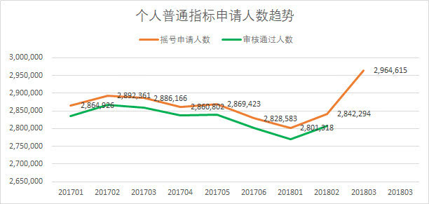
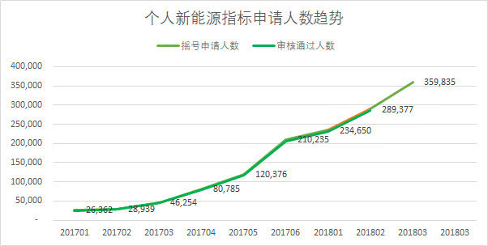

36万人排队买新能源汽车，北京摇号排到7年后
作者:代榕浡
时间：2018.9.26
两月一次的摇号本月又要开始了，就刚公布的2018年第四期申请数据进行简单的分析。
1.个人普通摇号申请人数明显上升。
本期个人普通摇号申请人数为2,964,615，较上期2,842,294上升12万多人。 从趋势上看，本期上升幅度不小。
 上升原因分析猜测有可能跟7月份为毕业季，在这个月估计有很多新参加工作，或社保满五等条件满足的人申请摇号。
2.个人新能源申请人数持续增长。
本期个人普通摇号申请人数为359,835，较上期289,377上升7万多 . 从趋势上看是持续上升。
 上升原因分析;- 新能源最起码在可见的未来是能排到的，有部分普通转新能源的。
- 新加入摇号人数增加，原因同普通新能源。
最后来算算现在新能源要多久？
现在是36万人在等待新能源汽车排队。2018年北京小客车指标年度配额为10万个，其中普通指标额度（燃油车）4万个，新能源指标额度6万个，2018年新能源小客车个人和单位指标首期已全部用尽。根据目前的排队规则及指标配置数量计算，新能源个人指标或将排到2025年。
虽然还有可能要等7年，但排上队总比不排队好，已经在排队的千万不要再掉队。为避免掉队的情况，相关部门也对延期确认功能进行了升级。但是请大家注意，系统只是帮你延期，但是延期审核是否通过，还需要自己关注的